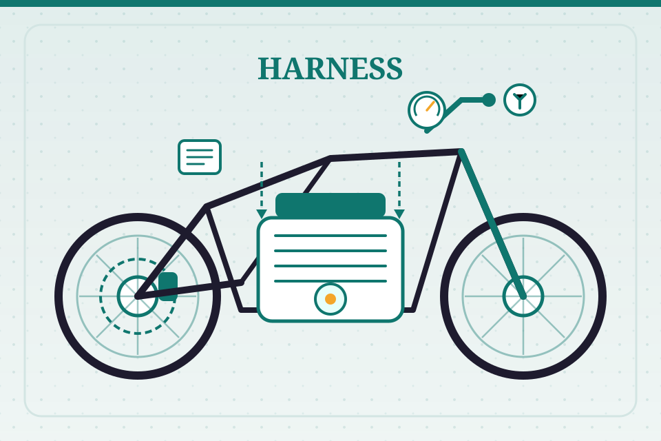
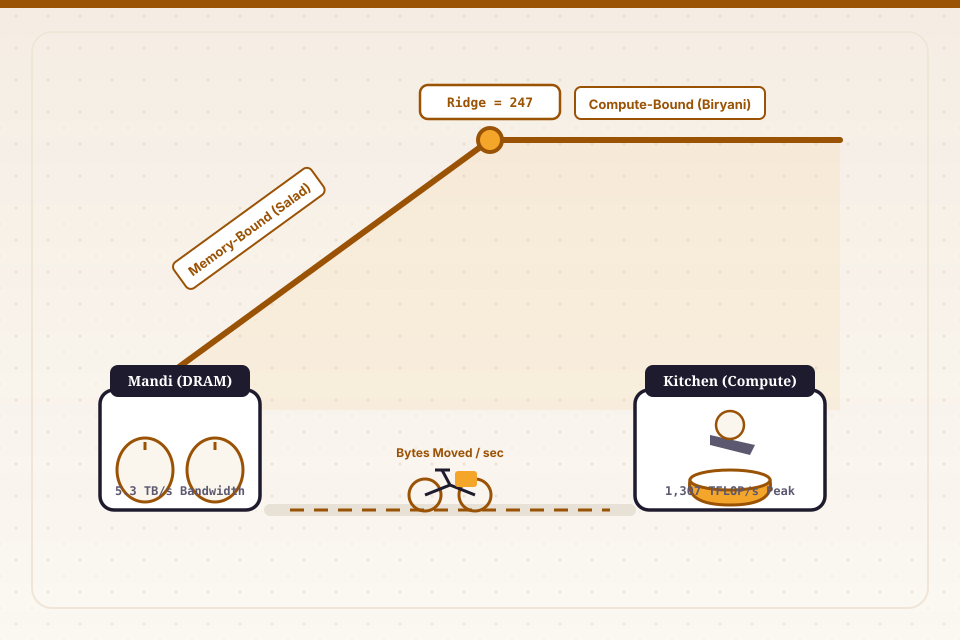

Three lessons to understand modern AI from scratch.
No hype, no black boxes, and no mathematical barrier. Concrete metaphors, interactive step-by-step machines, and code you can run yourself.

Lesson 1 • 25 min • Beginner
The Transformer, from Scratch
How does a machine look across long text to predict the next word? Build the complete decoder machine bottom-to-top with zero maths assumed.
Start the lesson →
Lesson 2 • 25 min • Beginner
What Is a Harness? Pi vs Hermes
An engine cannot ride to Leh without handlebars, brakes and a frame. Learn how a harness turns raw text models into autonomous agents.
Start the lesson →
Lesson 3 • 25 min • Beginner
The GPU Roofline Plot, from Scratch
Why does a 1,307 TFLOP/s MI300X slow down to 0.9 on simple addition? Master arithmetic intensity, bandwidth limits, and kitchen bottlenecks.
Start the lesson →How to use this site
These three lessons are self-contained and assume zero previous experience in deep learning or hardware systems.
Concrete Metaphors
Complex equations are replaced with real-world analogies: Mumbai local trains, Royal Enfield motorcycle mechanics, and busy highway dhaba kitchens.
Step-by-Step Figures
Every key concept is built visually piece by piece. Click through steppers or use your arrow keys to watch architectures assemble in real time.
Reproduce Every Claim
All figures are rigorously labeled as measured, reasoned, or from spec sheets. Copy small Python snippets to verify the numbers on your own machine.